All three users took pauses at some point, referred back to the display screen after completing an action and reacted to the beep sounds. Unlike Susan who did not hesitate when starting the oven, Richard observed the entire interface and Yvonne looked at the different cooking modes. However, Susan had to restart because she lost track of what she was doing and accidentally hit “Oven Clear/Off”. There was no obvious hesitation in Yvonne’s operations, in contrast to Susan and Richard who both hesitated. In addition, Yvonne was the only one who made a different choice from the other two users who both chose “Bake”.
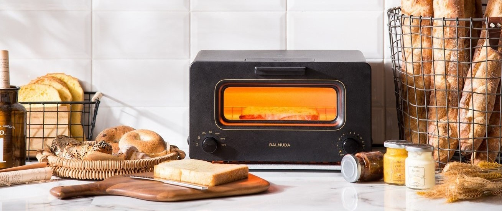
Persona
Understanding user experience is crucial. User interface designers need to step into users' shoes and bring common user needs to the forefront of planning and design. Personas are vital to the success of a product because they help designers to pin down the goals, motivations and behaviors of different user groups.
One of the user interfaces that my family has the most interactions with is the Bosch Oven. How does the experience with the Bosch oven differ across users? Is this oven designed for everyone? I performed user research through interviews and first-hand observations and displayed my insights through creating personas and storyboard.
Interface Overview
- cooking modes touchpads to select different cooking modes
- touch screen for display and input specifications
- numeric touchpads for users to input numbers
- feature buttons (e.g. oven timer, oven clear/off)
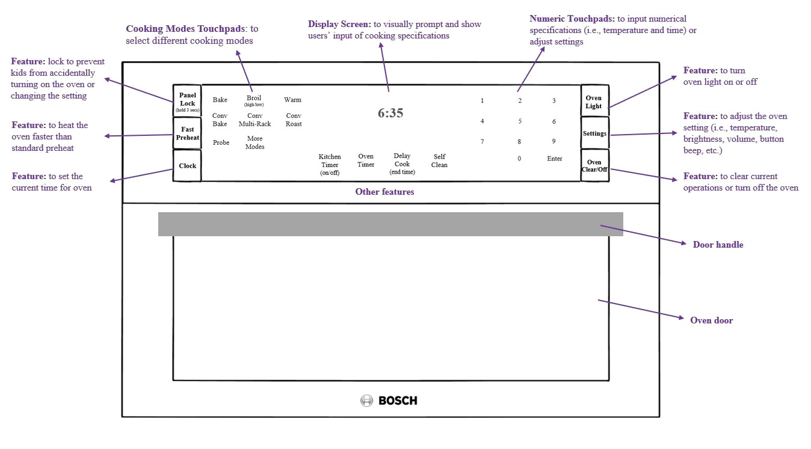
User Profiles 👪
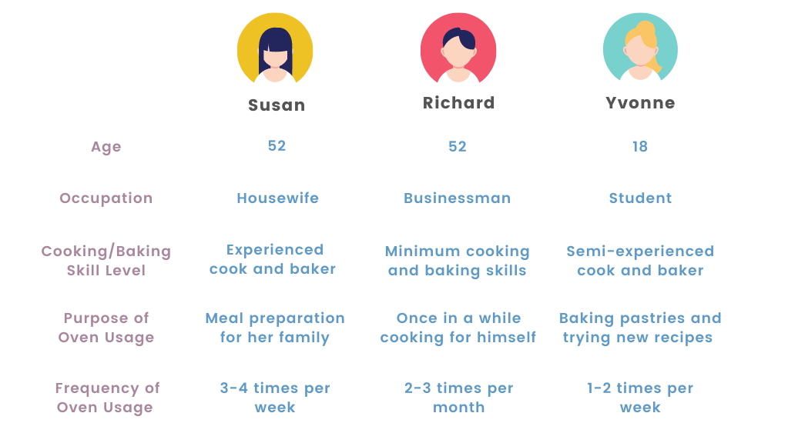
Observations 📋
User #1: Susan
- pressed the “Bake” mode without hesitation but paused afterwards
- accidentally turned off the oven and needed to restart
- more careful operations with reference to the display screen during the second time
User #2: Richard
- observed the interface for 15-20 seconds before pressing the “Bake” mode
- paused frequently throughout to observe the display screen
- confused about kitchen timer and over timer and selected the latter eventually
User #3: Yvonne
- looked at the different cooking modes and selected “Conv multi-rack”
- input cooking specifications without looking at the display
- came back when the beep sound rang, indicating completion of pre-heating
Interviews 🎤
I then sat down and interviewed each user to gain more insights about their experiences with the oven interface. Below are selected questions and responses that I found interesting.
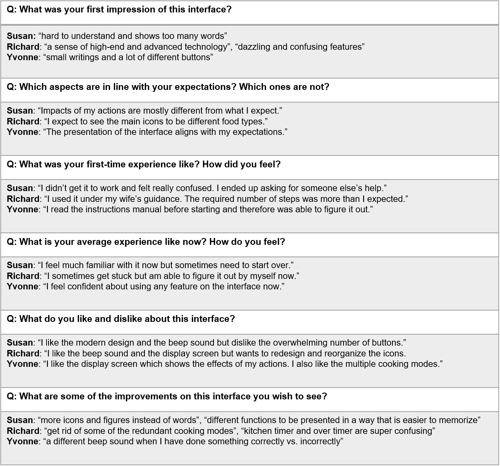
Personas: Overwhelmed Olivia and Inquisitive Ivan
"Overwhelmed Olivia" is a 52 year-old mother of the household who prepare all three meals for her family every day. She uses the oven 3 or 4 times per week but still feels overwhelmed when she messes up with any of the steps. She represents the group of users (middle-aged or older) who need to cook with the oven under time constraints and would feel frustrated by their misoperation.
"Inquisitive Ivan" is an 18 year-old student who bakes and cooks occasionally for fun in his spare time. He is able to learn how to use new technologies quickly and is the go-to person at home if anyone has a question about the oven. He represents the group of younger users who do not feel pressured to cook, but enjoy exploring new recipes with the different features of an advanced oven.
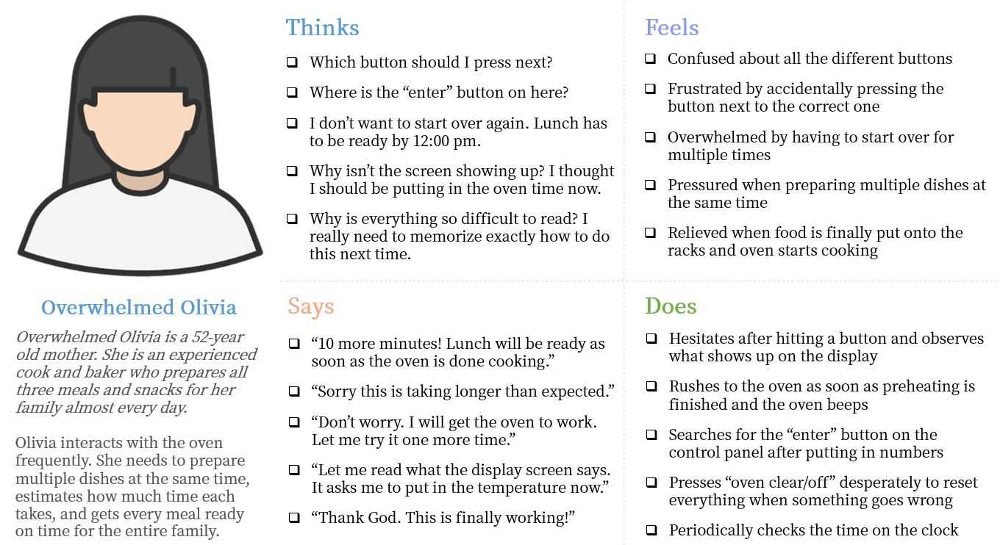
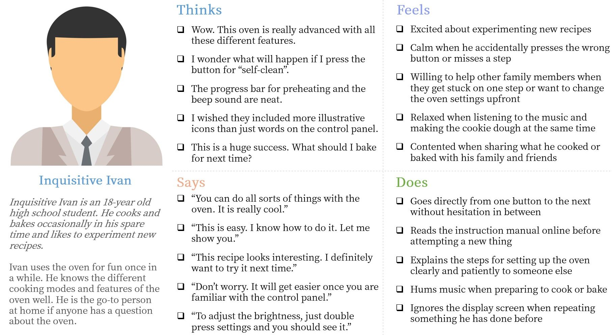
Storyboard: Overwhelmed Olivia 😨
Olivia is stressed out by the oven chaos again during lunch preparation today.
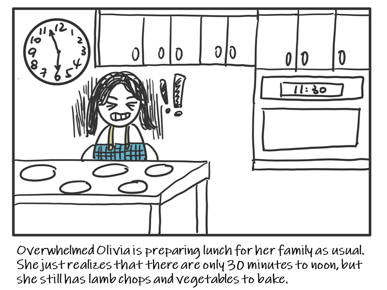
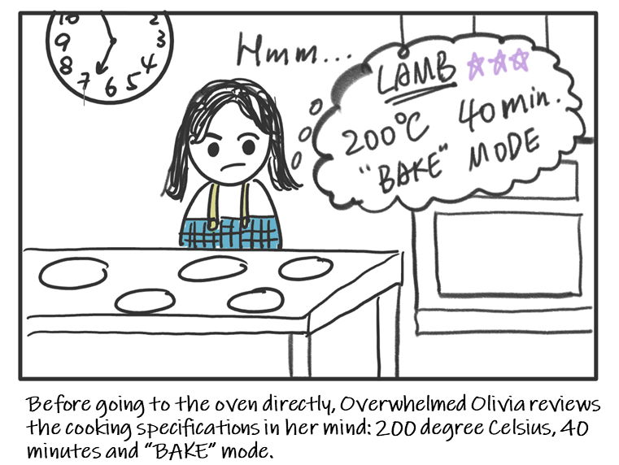
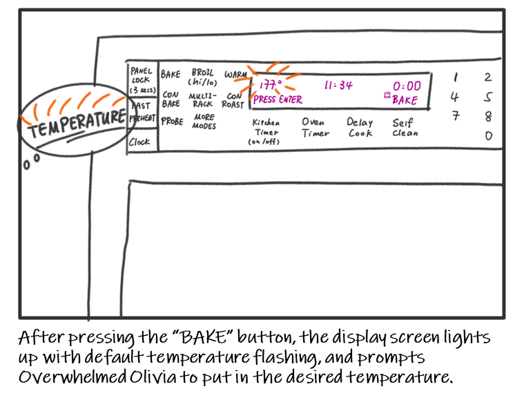
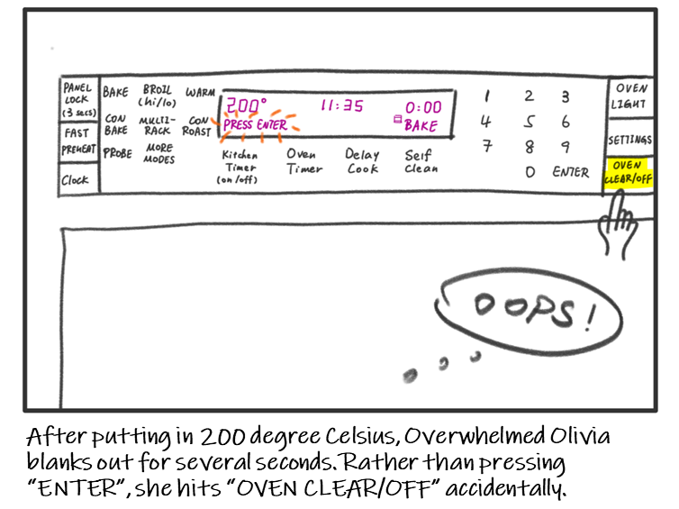
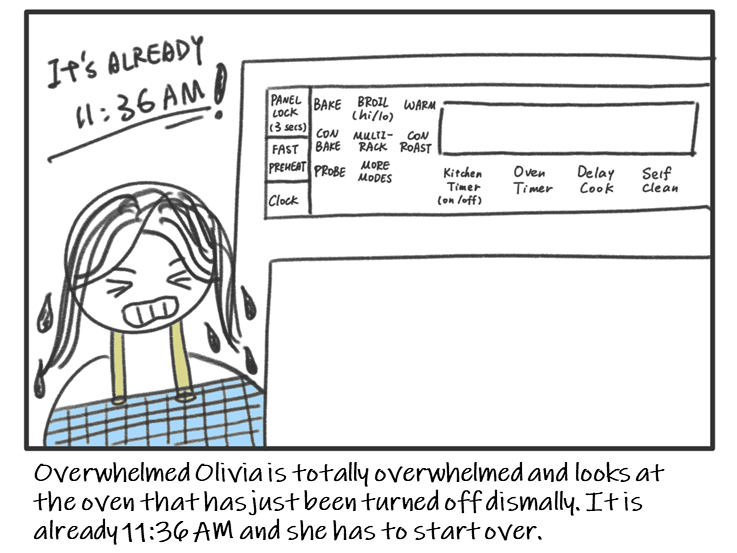
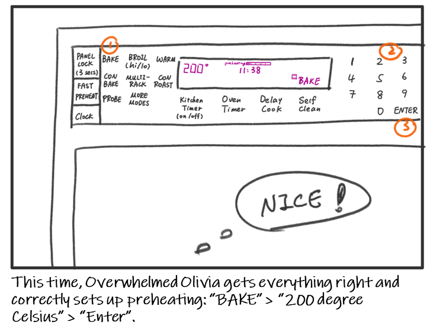
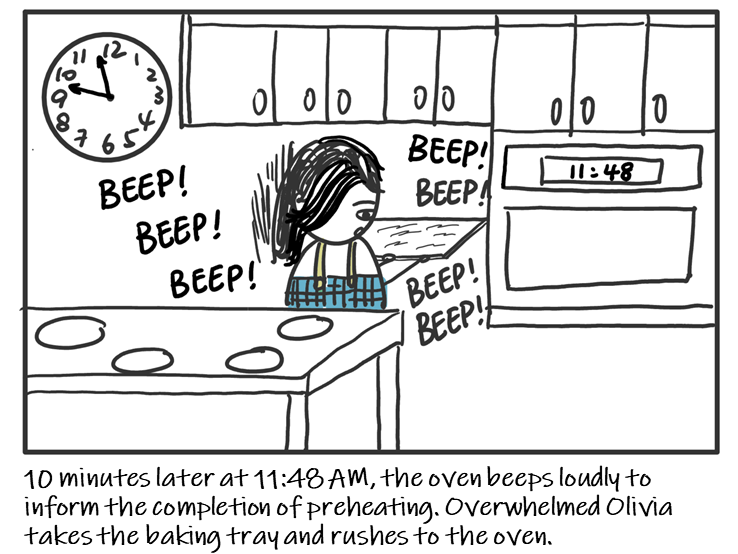
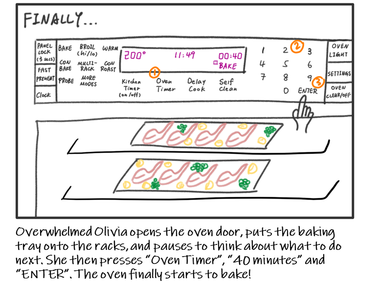
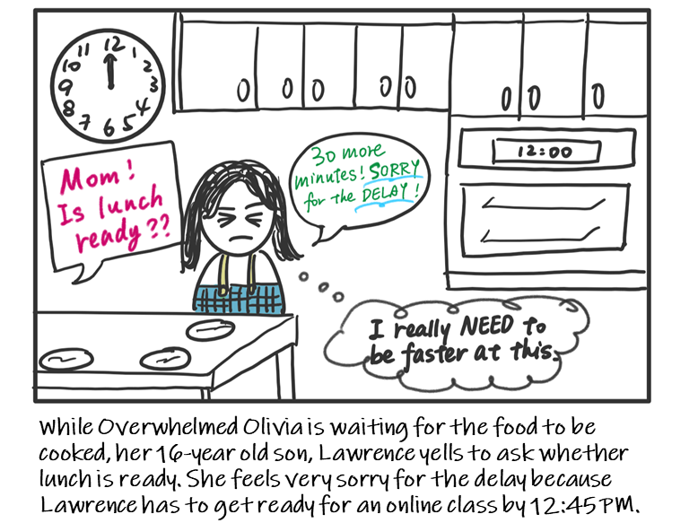
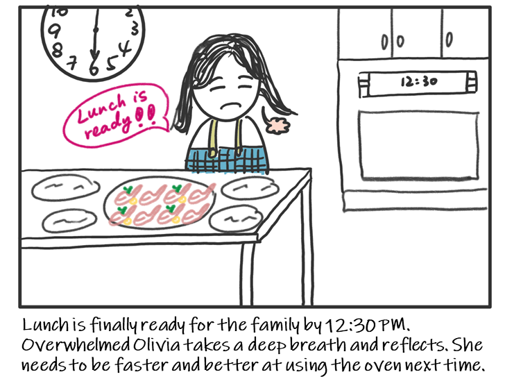
Reflections
Despite being an advanced piece of household appliance, the Bosch oven does not seem to provide the same positive experience for all users. Depending their goals and motivations, different users have different problems to solve and interact with the oven in different ways. Also, the context of usage largely determines users' feelings and emotions, thus effecting the outcomes of their operations.
Personas are useful tools which allow us to think from the perspectives of different user groups through creating profiles and scenarios for representative user. As a user interface designer, we need to identify the target audience of our products and engage their perspectives from the beginning of the design process.